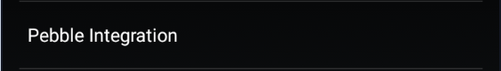
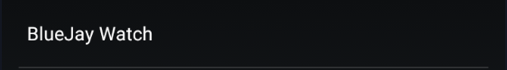
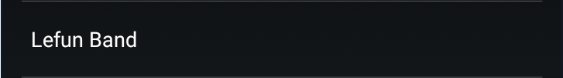
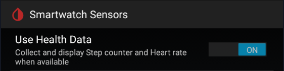
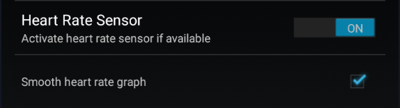

Smartwatches


xDrip+ direct integration⌁
xDrip+ offers a wide range of smartwatch support.
Android Wear Integration⌁
You'll find the most complete integration in Wear OS watches as they are running a part of the xDrip+ app locally.
Some of them can be used as standalone collectors (no phone required) when connecting to a sensor (some sensors).
If you need more watchfaces or customizations you can use Tasker (but not as a standalone collector).
Pebble Integration⌁
Pebble smartwatch use is a historic milestone of CGM in the Cloud. Pebble has been bought by Fitbit in 2016 and resources have moved to archives and rebble.io.
You need to download the watch app from APKMirror.

AmazFit Sync Service⌁
AmazFit was used only for Pace and Stratos models.
You cannot use this feature for other AmazFit watches.
BlueJay Watch⌁
BlueJay is an incredible companion of your Dexcom sensor, with or without xDrip+, with or without phone.

LeFun Band⌁
LeFun band integration was an early implementation for smartbands, best if used in mmol/l.
Unless you still own a LeFun W3, F3, F3S, F11 or F12 band this is not of any use now.

MiBand⌁
MiBand integration is the result of the huge work of Artem.
Many smartwatches and smartbands are now supported using the companion app WatchDrip+.
If you use WatchDrip+ you should disable MiBand.
Smartwatch Sensors⌁
xDrip+ can use supported smartwatches sensors.
When available you can let xDrip+ collect health data like heartrate and steps.

Two additional icons will appear on the main view, and if enabled, a graphic representations:
- A dark blue graph for heartrate
- A light cyan cloud line for steps

xDrip+ can request the heartbeat sensor to activate and you can smooth that graph.

Other smartwatches⌁
More smartwatches and devices can receive data from xDrip+ even if they are not directly integrated in the app.
Info
In order to have xDrip+ send data you need to enable xDrip+ web service.
Fitbit⌁
Warning
Some Fitbit apps have a secure http bug preventing them to receive data from xDrip+.
If you run an Android version below 10 you need to downgrade the app to a previous version like 3.58 and disable automatic updates. You can find it in Aptoide and other apk hosting servers.
If you run an Android version of 10 and above, update the Fitbit app to 3.65 (minimum) and upgrade the watch firmware to latest.
Glance⌁
Ionic/Sense/Versa/Versa 2/Versa 3/Versa Lite
Sentinel⌁
Sentinel Elite for Sense/Versa 3
Sentinel Pro for Ionic/Versa/Versa 2/Versa Lite
Facebook group: Sentinel
Marclock⌁
Ionic/Sense/Versa/Versa 2/Versa Lite
Analog CGM⌁
Orbits NS⌁
Radial CGM⌁
Ionic/Versa/Versa 2/Versa Lite/Versa 3/Sense
Samsung Gear⌁
G-Watch is the easiest way to perform this. See the wiki.
You can also use Tasker to display xDrip+ data on your Samsung Gear watch.
Garmin⌁
Many Garmin watchfaces are available, check your model is supported.
By Horsetooth
By andreas-may
By John_
By Roboleo1010